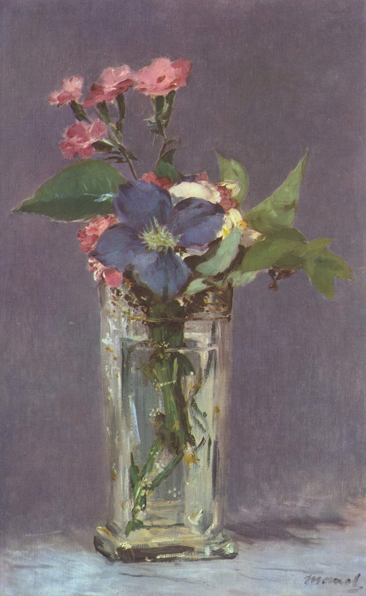

作品名 「ガラスの花瓶に生けたクレマチス」
花言葉 「精神の美」「旅人の喜び」「策略」
クレマチス
「精神の美」
「Clematis（クレマチス）」は、ギリシア語の「klema（ブドウなどのツル）」を語源とし、ツルでまつわりつく性質に由来します。細いツルを伸ばし、大きな花を咲かす植物で、たとえ枝やツルが細くても、見事に美しい花を咲かせる姿から精神的な強さが感じられることが由来して「精神の美」という花言葉が付けられました。“つる性植物の女王”とも呼ばれ、ガーデニングでも人気のある植物です。
ガラスの花瓶に
生けたクレマチス
エドゥアール・マネ
「ガラスの花瓶に生けたクレマチス」は、印象派の先駆的存在であった画家エドゥアール・マネが最晩年に手がけた静物画の代表作です。マネはこの絵画で、現代的な視点を取り入れながらも印象派の手法を使って、自然の風景を描いています。特に、彼は花や背景などの色彩を大胆に表現し、独特な空気感を生み出しています。この絵画は、マネの画家としてのスタイルと技術を象徴する作品とされています。
| 作品名 | ガラスの花瓶に生けたクレマチス |
| 作者 | エドゥアール・マネ |
| 制作年 | 1881年 |
| 種類 | キャンバス・油彩 |
| 寸法 | 60.3×73.7cm |
| 所蔵 | オルセー美術館 |